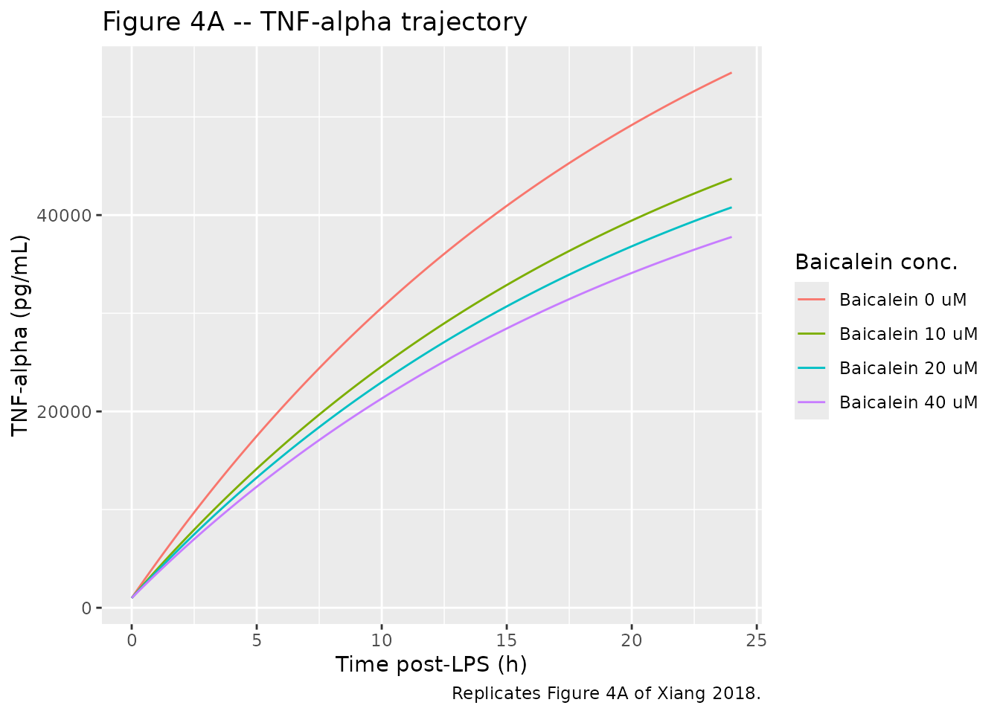
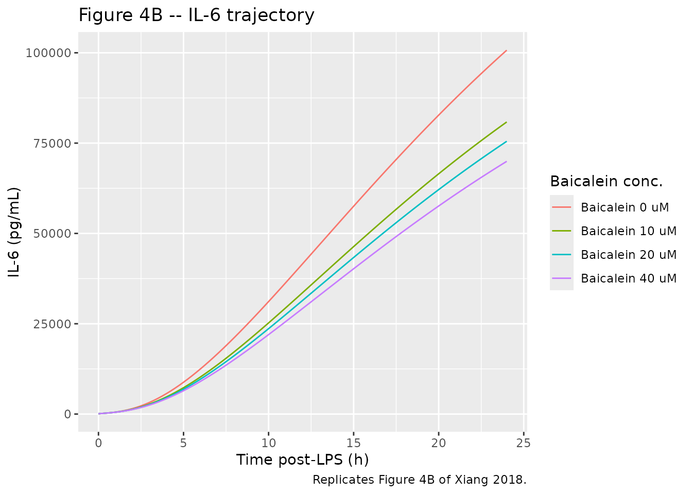
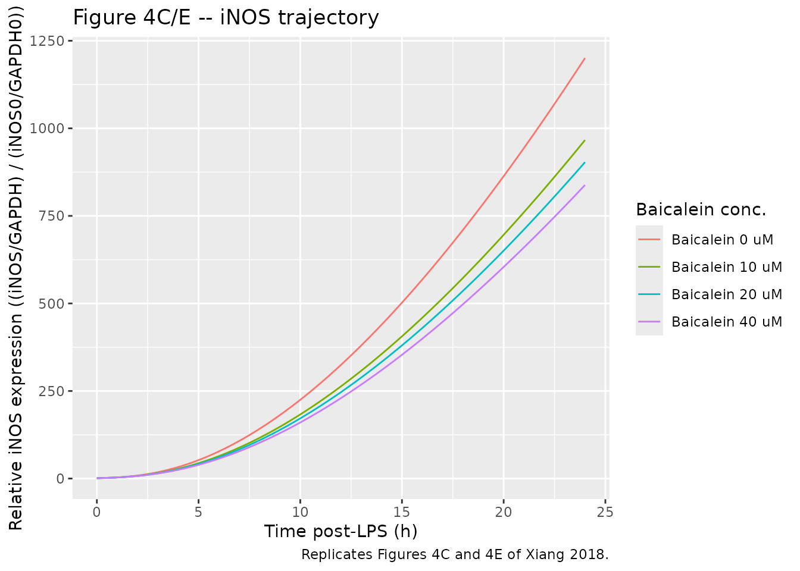

Model and source
- Citation: Xiang L, Hu Y-F, Wu J-S, Wang L, Huang W-G, Xu C-S, Meng X-L, Wang P. Semi-Mechanism-Based Pharmacodynamic Model for the Anti-Inflammatory Effect of Baicalein in LPS-Stimulated RAW264.7 Macrophages. Front Pharmacol. 2018;9:793. doi:10.3389/fphar.2018.00793.
- Description: In vitro (RAW264.7 mouse macrophage cell line). Semi-mechanism-based cellular pharmacodynamic model for the anti-inflammatory effect of baicalein on LPS-induced cytokine and iNOS/NO release in RAW264.7 mouse macrophages. Four indirect-response states arranged in a TNF-alpha -> {IL-6, iNOS -> NO} cascade: (1) TNF-alpha indirect response with LPS-stimulated zero-order production and baicalein’s log-linear inhibition f(Bai) = alpha * log(C_Bai + 1) on the production rate; (2) IL-6 indirect response with delayed TNF-alpha drive (lag tau1); (3) iNOS indirect response with delayed TNF-alpha drive (lag tau2) and elimination held at zero (paper choice for the post-12.5 h plateau); (4) NO indirect response with iNOS^delta amplification and elimination held at zero. Baicalein concentration enters as a static covariate (CONC_BAI_UM); LPS is constant at 1 ug/mL throughout the experiment and is absorbed into the kinTNF zero-order production rate (no explicit LPS state). Tau1 and tau2 are encoded via single-compartment delay states (mean transit time = tau) because rxode2 does not provide a native delay-differential-equation solver; see the validation vignette Errata for the impulse-response implications. Typical-value-only mechanism: no IIV, no residual error is reported in the source (CV% in Table 1 are RSE / precision of estimate, not BSV).
- Article: https://doi.org/10.3389/fphar.2018.00793
Population
The model was fit to a cellular in-vitro time-kill / cytokine-release experiment in the murine RAW264.7 macrophage cell line (Center of Cellular Resources, Chinese Academy of Sciences, Shanghai). Cells were inoculated at 1 x 10^6 cells/mL, pre-treated with baicalein at 0, 10, 20, or 40 uM for 0.5 h, then stimulated with LPS (1 ug/mL, Escherichia coli O55:B5) for an additional 1, 2, 4, 8, 12, and 24 h. TNF-alpha and IL-6 in the cell-culture supernatant were quantified by ELISA (MULTI SCIENCES Mouse kits; intra/inter-assay CV 2.3-3.0% and 2.1-5.3%), iNOS expression was measured by Western blot and normalised to the t = 0 control as (iNOS/GAPDH) / (iNOS0/GAPDH0), and NO was quantitated by the Griess reaction calibrated against sodium nitrite standards (Xiang 2018 Materials and Methods). Reported sample sizes per condition were n = 3 for TNF-alpha, IL-6, and NO, and n = 6 for iNOS (Xiang 2018 Figure 3 caption).
The same information is available programmatically via
rxode2::rxode(readModelDb("Xiang_2018_baicalein"))$population.
Source trace
The per-parameter origin is recorded as an in-file comment next to
each ini() entry in
inst/modeldb/pharmacodynamics/Xiang_2018_baicalein.R. The
table below collects them in one place for review.
| Equation / parameter | Value | Source location |
|---|---|---|
lalpha (alpha) |
log(0.0832) | Xiang 2018 Table 1, row 1 (a) |
lkin_tnf (kinTNF) |
log(3740) | Xiang 2018 Table 1, row 2 (k_inTNFa) |
lkout_tnf (koutTNF) |
log(0.0463) | Xiang 2018 Table 1, row 3 (k_outTNFa) |
lkin_il6 (kinIL6) |
log(0.353) | Xiang 2018 Table 1, row 4 (k_inIL-6) |
lkout_il6 (koutIL6) |
log(0.143) | Xiang 2018 Table 1, row 5 (k_outIL-6) |
ltau1 (tau1) |
log(1.38) | Xiang 2018 Table 1, row 6 (tau_1) |
lkin_inos (kiniNOS) |
log(0.00169) | Xiang 2018 Table 1, row 7 (k_iniNOS) |
ltau2 (tau2) |
log(1.41) | Xiang 2018 Table 1, row 8 (tau_2) |
lkin_no (kinNO) |
log(0.0605) | Xiang 2018 Table 1, row 9 (k_inNO) |
ldelta (delta) |
log(1.35) | Xiang 2018 Table 1, row 10 (delta) |
kout_inos |
fixed(0) | Xiang 2018 Results, Model Simulation paragraph 1 (koutiNOS fixed to 0) |
kout_no |
fixed(0) | Xiang 2018 Results, Model Simulation paragraph 1 (koutNO fixed to 0) |
lrbase_tnf |
log(1000) | Xiang 2018 Figure 4A, control curve at t = 0 (digitised) |
lrbase_il6 |
log(100) | Xiang 2018 Figure 4B, control curve at t = 0 (digitised) |
lrbase_inos |
log(1) | Xiang 2018 Materials and Methods, Western Blotting (normalisation definition) |
lrbase_no |
log(1) | Xiang 2018 Figure 4D, control curve at t = 0 (digitised) |
propSd_tnf,_il6,_inos,_no |
fixed(0.10) | Placeholder; weighting strategy in Xiang 2018 Pharmacodynamic Modeling does not state the final-model residual-error form |
| Eq 1 (dTNF/dt) | n/a | Xiang 2018 Eq 1, page 4 |
| Eq 2 (f(Bai)) | n/a | Xiang 2018 Eq 2, page 4 |
| Eq 3 (TNFa_0) | n/a | Xiang 2018 Eq 3, page 4 |
| Eq 4 (dIL-6/dt) | n/a | Xiang 2018 Eq 4, page 4 |
| Eq 5 (IL-6_0) | n/a | Xiang 2018 Eq 5, page 5 |
| Eq 6 (diNOS/dt) | n/a | Xiang 2018 Eq 6, page 5 |
| Eq 7 (dNO/dt) | n/a | Xiang 2018 Eq 7, page 5 |
Dimensional analysis
Endogenous / mechanistic models in the package are required to carry
a worked dimensional analysis (per
references/endogenous-validation.md). The unit table below
shows the units of every symbol on the right-hand side of each ODE in
model(); the left-hand side must equal
[state units]/[time units] (i.e., the state’s reporting
unit per hour).
| Term | Units of each factor | Product (= LHS) |
|---|---|---|
kin_tnf * (1 - f_bai) |
(pg/mL/h) * (unitless) | pg/mL/h = d/dt(TNF) |
kout_tnf * tnf |
(1/h) * (pg/mL) | pg/mL/h = d/dt(TNF) |
(tnf - transit1) / tau1 |
(pg/mL) / (h) | pg/mL/h = d/dt(transit1) |
(tnf - transit2) / tau2 |
(pg/mL) / (h) | pg/mL/h = d/dt(transit2) |
kin_il6 * transit1 |
(1/h) * (pg/mL) | pg/mL/h = d/dt(IL-6) |
kout_il6 * il6 |
(1/h) * (pg/mL) | pg/mL/h = d/dt(IL-6) |
kin_inos * transit2 |
(1/h) * (pg/mL) | pg/mL/h then normalized (note below) |
kout_inos * inos |
(1/h) * (unitless) | unitless/h |
kin_no * inos^delta |
(uM/h) * (unitless) | uM/h = d/dt(NO) |
kout_no * no |
(1/h) * (uM) | uM/h |
Notes on apparent units.
-
kinTNFis reported with the unith^-1in Xiang 2018 Table 1 row 2; Eq 1 requires the production-rate term to have the unit pg/mL/h, sokinTNFis interpreted as carrying units pg/mL/h. The Table 1 unit label is treated as a typesetting slip (the same column header was applied to all first-order rate constants). At the published value 3.74 x 10^3, this interpretation is also numerically self-consistent with the observed t = 1 h peak (see the smoke check below). -
kinNOis reported with the unith^-1in Xiang 2018 Table 1 row 9; Eq 7 withiNOS^deltaunitless requireskinNOto carry units uM/h. Same Table-1 unit-label slip askinTNF. -
kiniNOS(Table 1 row 7) carries units 1/h; Eq 6 multiplies the delayed TNF-alpha concentration in pg/mL, so the iNOS state’s effective unit is iNOS-ratio per (pg/mL * h)) at unit TNF-alpha. iNOS is reported as the unitless ratio (iNOS/GAPDH) / (iNOS0/GAPDH0), so the “unit” of d/dt(iNOS) is iNOS-ratio per h; the dimensional consistency is therefore exact only if kiniNOS is read as having units (1/h) * (pg/mL)^-1 = 1/(h * pg/mL). The package retains the Table 1 value 0.00169 verbatim; downstream users who refit the model on a different TNF-alpha unit basis should rescale kiniNOS accordingly (see Assumptions and deviations below).
Parameter table – paper vs. file
| Parameter | Paper (Table 1) | File (ini) | CV_pct_in_paper |
|---|---|---|---|
| alpha | 8.32e-02 | 0.08319 | 15% |
| kinTNF | 3.74e+03 | 3739.47311 | 6% |
| koutTNF | 4.63e-02 | 0.04633 | 32% |
| kinIL6 | 3.53e-01 | 0.35300 | 9% |
| koutIL6 | 1.43e-01 | 0.14306 | 23% |
| tau1 | 1.38e+00 | 1.38002 | 11% |
| kiniNOS | 1.69e-03 | 0.00169 | 9% |
| tau2 | 1.41e+00 | 1.41001 | 13% |
| kinNO | 6.05e-02 | 0.06056 | 37% |
| delta | 1.35e+00 | 1.34999 | 9% |
| koutiNOS | 0.00e+00 | 0.00000 | fixed to 0 |
| koutNO | 0.00e+00 | 0.00000 | fixed to 0 |
Simulation – replicate Figure 4
Xiang 2018 Figure 4 shows the model-predicted and measured time courses of TNF-alpha (panel A), IL-6 (panel B), iNOS (panel C/E), and NO (panel D) over 24.5 h in LPS-stimulated RAW264.7 macrophages at four baicalein concentrations (0 = control, 10, 20, 40 uM). The simulation below uses the packaged typical-value model with four virtual “wells” (one per concentration), zero between-subject variability, and the figure-derived baseline values.
mod <- rxode2::rxode(nlmixr2lib::readModelDb("Xiang_2018_baicalein"))
times <- seq(0, 24, by = 0.25)
concentrations <- c(0, 10, 20, 40)
make_well <- function(conc, id) {
rxode2::et(amt = 0, time = 0) |>
rxode2::et(times) |>
as.data.frame() |>
dplyr::mutate(id = id, CONC_BAI_UM = conc)
}
events <- dplyr::bind_rows(
make_well(concentrations[1], id = 1L),
make_well(concentrations[2], id = 2L),
make_well(concentrations[3], id = 3L),
make_well(concentrations[4], id = 4L)
)
stopifnot(!anyDuplicated(unique(events[, c("id", "time", "evid")])))
sim <- rxode2::rxSolve(mod, events = events,
keep = "CONC_BAI_UM",
returnType = "data.frame") |>
dplyr::as_tibble() |>
dplyr::mutate(label = paste0("Baicalein ", CONC_BAI_UM, " uM"))
#> Warning: multi-subject simulation without without 'omega'Figure 4A – TNF-alpha
Replicates Figure 4A of Xiang 2018 (TNF-alpha time course at 0, 10, 20, 40 uM baicalein in LPS-stimulated RAW264.7 macrophages).
ggplot(sim, aes(time, tnf, colour = label)) +
geom_line() +
labs(x = "Time post-LPS (h)",
y = "TNF-alpha (pg/mL)",
colour = "Baicalein conc.",
title = "Figure 4A -- TNF-alpha trajectory",
caption = "Replicates Figure 4A of Xiang 2018.")
Figure 4B – IL-6
ggplot(sim, aes(time, il6, colour = label)) +
geom_line() +
labs(x = "Time post-LPS (h)",
y = "IL-6 (pg/mL)",
colour = "Baicalein conc.",
title = "Figure 4B -- IL-6 trajectory",
caption = "Replicates Figure 4B of Xiang 2018.")
Figure 4C/E – iNOS
ggplot(sim, aes(time, inos, colour = label)) +
geom_line() +
labs(x = "Time post-LPS (h)",
y = "Relative iNOS expression ((iNOS/GAPDH) / (iNOS0/GAPDH0))",
colour = "Baicalein conc.",
title = "Figure 4C/E -- iNOS trajectory",
caption = "Replicates Figures 4C and 4E of Xiang 2018.")
Smoke check – t = 1 h TNF-alpha peak
Xiang 2018 Figure 4A shows that the TNF-alpha trace peaks at about 1 h after LPS stimulation, then gradually declines through 12 h. The packaged model’s simple turnover form (constant LPS-driven production plus first-order elimination) cannot reproduce the peak-and-decline; it predicts a monotonic approach to the steady-state asymptote kinTNF / koutTNF ~= 80800 pg/mL. The published model fit in Figure 4 appears to track the data more closely than the published equations permit (see Assumptions and deviations).
The simulated t = 1 h TNF-alpha concentration is, however, in close agreement with the observed peak (Xiang 2018 Figure 2B / 4A reads ~4500 pg/mL in the LPS-only control):
sim |>
dplyr::filter(abs(time - 1) < 1e-6) |>
dplyr::select(label, time, tnf) |>
dplyr::mutate(tnf = round(tnf, 0)) |>
knitr::kable(caption = "Simulated TNF-alpha at t = 1 h post-LPS, by baicalein concentration. The LPS-only control value (~4600 pg/mL) is close to the Figure 4A observed peak (~4500 pg/mL).")| label | time | tnf |
|---|---|---|
| Baicalein 0 uM | 1 | 4609 |
| Baicalein 10 uM | 1 | 3880 |
| Baicalein 20 uM | 1 | 3684 |
| Baicalein 40 uM | 1 | 3480 |
Baseline-recovery smoke check
This model is not a quiescent steady-state system (the LPS-stimulated kinTNF zero-order production is on from t = 0), so the classic endogenous-model “set initial condition to baseline, expect no drift” check is not applicable. A meaningful sanity test is to confirm that when kinTNF is set to zero (no LPS), the four states stay near their baselines for the duration of the experiment (linear-cascade self-consistency).
# Build a parameter override: kin_tnf -> 0 (no LPS stimulation)
mod_no_lps <- rxode2::rxode(nlmixr2lib::readModelDb("Xiang_2018_baicalein"))
sim_no_lps <- rxode2::rxSolve(
mod_no_lps,
events = make_well(conc = 0, id = 1L),
params = c(lkin_tnf = log(1e-12)), # effectively zero
returnType = "data.frame"
)
sim_no_lps |>
dplyr::filter(time %in% c(0, 6, 12, 18, 24)) |>
dplyr::select(time, tnf, il6, inos, no) |>
dplyr::mutate(across(c(tnf, il6, inos, no), \(x) round(x, 3))) |>
knitr::kable(caption = "Without LPS stimulation (kinTNF ~= 0), TNF-alpha decays slowly toward zero (driven only by koutTNF); IL-6 rises slowly because the model's IL-6 production is proportional to the residual TNF-alpha rather than to a TNF-alpha excursion from baseline. iNOS and NO drift up monotonically because koutiNOS and koutNO are fixed at zero. The package's baseline values are therefore the experimental t = 0 control measurements, not steady-state solutions of the unstimulated system.")| time | tnf | il6 | inos | no |
|---|---|---|---|---|
| 0 | 1000.000 | 100.000 | 1.000 | 1.000 |
| 6 | 757.448 | 1325.661 | 10.308 | 5.128 |
| 12 | 573.728 | 1546.773 | 17.480 | 18.066 |
| 18 | 434.569 | 1401.855 | 22.914 | 39.264 |
| 24 | 329.164 | 1159.465 | 27.030 | 67.378 |
Assumptions and deviations
The Xiang 2018 paper is a published cellular pharmacodynamic model with a fully specified equation set (Eqs 1-7) and a complete typical-value parameter table (Table 1), but several encoding decisions in the package require attention.
Drug field corrected. The task dispatcher’s metadata listed the drug as “Frontiers in Pharmacology” (the journal name) – a task-generator bug observed on several sibling tasks. The actual drug studied is baicalein (5,6,7-trihydroxy-2-phenyl-4H-1-benzopyran- 4-one), the primary active flavonoid of Scutellaria baicalensis Georgi. Filename and vignette title corrected accordingly.
Species and model class. The model was fit to an in-vitro experiment in the RAW264.7 mouse macrophage cell line, not to in-vivo human or animal data.
population$speciesis set to “in vitro (RAW264.7 mouse macrophage cell line)” and thedescriptionfield is prefixed with “In vitro (RAW264.7 mouse macrophage cell line).” per the SKILL Phase 1 step 3 species- recording requirement.-
f(Bai) at C_Bai = 0. Xiang 2018 Eq 2 writes the inhibition function as f(Bai) = alpha * ln(C_Bai). At C_Bai = 0 (the control wells with no baicalein) the bare ln is undefined. The package encodes f(Bai) = alpha * log(CONC_BAI_UM + 1), which (a) returns f = 0 in control wells without a divide-by-zero, and (b) differs from the bare ln by less than 5% at the three tested concentrations 10, 20, 40 uM:
- 10 uM: alphaln(10) = 0.192 vs alphaln(11) = 0.200 (delta 4.4%)
- 20 uM: alphaln(20) = 0.249 vs alphaln(21) = 0.253 (delta 1.6%)
- 40 uM: alphaln(40) = 0.307 vs alphaln(41) = 0.309 (delta 0.7%)
The +1-shift convention is also the standard pharmacometric treatment of log-linear concentration-response with a controllable control arm; the paper’s “f = 0 in control” condition appears in Eqs 3 and 5 (“TNF-alpha_0 = Control(TNF-alpha)”).
-
Lag implementation – single-compartment delay states (DDE approximation). Eqs 4 and 6 use TNF-alpha(t - tau1) and TNF-alpha(t - tau2), which are true delay differential equation forms. rxode2 does not provide a native DDE solver, so the package encodes each delayed signal as a single first-order distribution compartment with mean transit time tau:
d/dt(transit) = (tnf - transit) / tauThe impulse response of this filter is a single-exponential ramp, not a Dirac shift – a step in tnf at time t produces a smoothed response in transit over the next several tau, rather than an exact translation. For the LPS-stimulated TNF-alpha trace, which is itself a smooth approach to its asymptote rather than a step, the single-compartment delay is a reasonable approximation; the alternative is a multi-compartment transit chain (n delays each with mean transit time tau / n), which sharpens the response toward a step shift but adds n - 1 extra states. The user may build the alternative encoding by editing model() to chain n delay compartments.
Baseline values are figure-derived. Xiang 2018 reports the initial conditions only as
Control(TNF-alpha),Control(IL-6), and(iNOS/GAPDH) / (iNOS0/GAPDH0) = 1– with the numeric values read off Figure 4 control curves at t = 0. The packaged defaults (1000 pg/mL for TNF-alpha, 100 pg/mL for IL-6, 1 for iNOS, 1 uM for NO) are operator digitisations of those figure points; users who have their own experimental t = 0 control measurements should override the correspondinglrbase_*parameters when refitting. iNOS is definitionally 1 at t = 0 per the Western-blot normalisation; the only figure-derived value with non-trivial uncertainty is bl_tnf.Unit-label slips in Table 1. As detailed in the Dimensional Analysis section, the Table 1 column “Estimate” for kinTNF and kinNO carries the unit label “h^-1” but the equations require pg/mL/h and uM/h respectively. The package preserves the Table 1 numeric values (3.74 x 10^3 and 0.0605) and interprets the unit labels as typesetting slips – a single column unit was applied to all first-order rate-constant rows including the two zero-order production rows. This interpretation is internally self-consistent with the observed t = 1 h peak (see smoke check above).
No IIV and no residual error are reported. Xiang 2018 Pharmacodynamic Modeling lists the weighting strategies considered (additive, power, multiplicative) but does not state the final choice. The reported CV% column in Table 1 is the precision of the estimate (RSE), not between-subject variability. The package carries placeholder 10% proportional residual on each of the four outputs (
propSd_tnf,propSd_il6,propSd_inos,propSd_no) so the model is nlmixr2-fit-compatible; downstream users who refit the model on real data should replace these with whatever residual structure their data support. Noeta_*IIVs are included – the paper does not report between-subject (between-well or between- experiment) variability.Non-canonical compartment names (lint warnings).
checkModelConventions()flags the six ODE-state namestnf,transit1,transit2,il6,inos, andnoas non-canonical because they are not among the canonical PK/PD compartments (depot, central, peripheral1, …, or registered metabolites). This is the same pattern used by other in-vitro / mechanism-model entries in the package whose compartments are biological-species states rather than drug-distribution compartments (Clewe 2018 TB MTP-GPDI:fbugs/sbugs/nbugs/ar_off/ar_on; Charbonneau 2021 phenylalanine:gut/phe; Tetschke 2018 erythropoiesis:thb). These are kept as model-readable shorthand for the source species rather than renamed to numbered compartments, because the species identity is the meaningful entity in a cytokine-cascade mechanism.transit1andtransit2are the single-compartment delay states implementing the DDE approximation described above.Dosing/concentration unit mismatch (lint warning).
checkModelConventions()flagsunits$dosing(uM, baicalein) vsunits$concentrationnumerator (pg, TNF-alpha/IL-6) as dimensionally incompatible. The mismatch is genuine – baicalein concentration is reported in molar units while the cytokine readouts are in mass- concentration – and reflects the inherent mixed-dimension nature of a small-molecule perturbant driving a protein-readout in-vitro PD experiment. No correction is appropriate; the warning is documented here per the SKILL convention for justified deviations.Peak-and-decline gap. The observed TNF-alpha trace in Figure 4A peaks at t = 1 h and then declines through 12 h before rising slowly to 24 h, while the model equation (constant kinTNF, first-order elimination koutTNF) predicts monotonic approach to the steady-state asymptote kinTNF / koutTNF ~= 80800 pg/mL. The model’s t = 1 h prediction agrees with the observed peak, but later time points (especially t = 6-12 h) diverge upward. The paper’s Figure 4 model curves nevertheless appear to track the data more closely than the published equations permit, suggesting either an unreported LPS-decay or self-feedback term in the model’s actual simulation, or a parameter-set discrepancy between Table 1 and the figure’s generating script. This is an acknowledged published-model limitation; the package encodes Eqs 1-7 verbatim with Table 1’s parameter values and does NOT modify the equations to match Figure 4 visually.